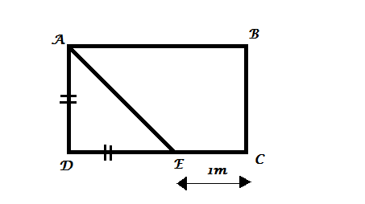

2014 O/L Mathematics
1. ABCD ඍඡුකෝණාස්රාකාර වීදුරු තහඩුවෙන් ADE සමද්වීපාද ත්රිකෝණාකාර කොටස කපා ඉවත් කරනු ලැබේ (රූපය බලන්න).
CE හි දිග 1m වේ.

(i) DE හි දිග මීටර x ලෙස ගෙන, තහඩුවෙහි ඉතිරි වන කොටසෙහි වර්ගඵලය සඳහා ප්රකාශනයක් x ඇසුරෙන් ලියන්න.
ඉතිරි වන ABCE හි වර්ගඵලය 5m ² වේ.
Enter your Answer: